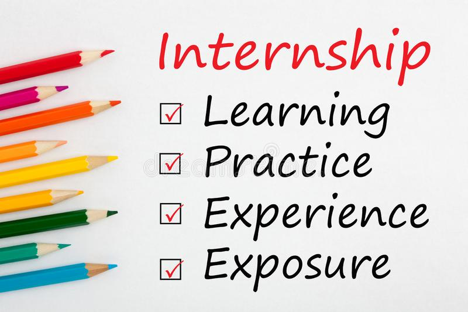

Type of Internships: Part-time/Full-time

✨Internshala is one of the largest and the best internship websites in India. It has grown not just to provide internships but also to train students to acquire specific skills.
✨Students have to create their accounts by filling out a signup form. This form includes details about your education, previous work experiences, awards etc. and creates a CV file for you. Once you select the company you want to apply to, you must answer 2-3 questions. Then you will receive a call-back for an interview.
✨The company selection is vast here, from MNC’s to small businesses and digital marketing to content writing. It offers students a wide range of industries that you can get.
LinkedIn
Type of Internships: Part-time/ Full-time
✨This is a professional networking website founded, keeping it in mind as a business alternative to Facebook. It also doubles as one of the best internship websites in India.
✨For securing an internship on LinkedIn, the candidate must make a well-versed profile which could be easily shared to the recruiters. To make the process even easier, one must avail the vast networking opportunities available on LinkedIn to receive the updates on their internship faster.
✨The process of finding internships is easy. On the home page, you can easily search for internships. One can even refine their search using other keywords like ‘marketing internships’, ‘content writing internships’. This might ask you for your local pin code, after which it will present a list of companies.
✨The best thing about LinkedIn and the connections is that once you find a company. This will display how many of your connections are associated with the company and thus help secure an internship.
Monster
Type of Internships: Part-time/Full-time
✨Monster India, which has its headquarters in Hyderabad, began operations in 2001. It now has operations in 11 other Indian cities, including Mumbai, Delhi, Bangalore, Chennai, Pune, Kolkata, Ahmadabad, Baroda, Chandigarh, and Cochin. It helps millions of students get their dream internships and is certainly one of the best jobs and internships websites in India.
✨A student can upload their resumes and easily filter their results using skills, location or even companies. Many top tier firms across the world use Monster to post in their internship openings which can be easily accessed by students. Students can also avail various other services such as career guidance, LinkedIn makeover, psychometric tests, resume tips, etc. Hence, it one of the premier career portals which also doubles down as one of the best internship websites in India.
Naukri
Type of Internships: Part-time/Full-time
✨It is one of the top-rated internship websites in India. It has a large database of top firms which the students can easily access. They can also filter results by mentioning their key skills, location preference or even organization preferences. One could also look for additional resources such as resume writing tips, courses and certifications and preparation tips to help them stand out from the crowd.
Indeed
Type of Internships: Part-time/Full-time
✨One of the largest visited career websites with more than 250 million active websites, it helps the students to secure an internship based on various parameters. A student can easily create their profile and upload their resume and filter out the results based on their preferences. It also provides additional value-added services to its users. This makes Indeed one of the best internship sites in India.
StuMagz
Type of Internships: Part-time/Full-time
✨This is a ‘student discovery platform’ that offers different services to students and allows them to come together to exchange ideas.
✨StuMagz offers students the ability to search through an array of opportunities in the form of internships.
✨There are also certain internship opportunities that students are personally notified about. Students can make this selection based on their search results. After this, all the student is expected to apply with the company using the online CV.
✨The important point is to verify your skills. This process can be set up while you are registering your account. This makes them more credible and you a more viable candidate for certain posts. Hence it certainly is one of easy-to-use internship websites in India.
Twenty19
Type of Internships: Part-time/Full-time
✨Twenty19 is the best choice whether you’re looking for projects, internships, volunteer opportunities, or anything similar. Over 6 lakh students are among its user base. It serves as a central hub for connecting the firms with the students.
✨Your personal details are shared on this website with a number of business organizations. Then you have a chance to get chosen in order to improve the interns’ quality. Students can use Facebook, Gmail, or any other email ID to register for free on this website.
✨You can also ask the student community to send in their applications. Hence students can easily land their dream internship through Twenty19 as it is one of the top-rated internship websites in India.
LetsIntern
Type of Internships: Part-time/Full-time
✨LetsIntern is one of the best internship websites for college students as it helps them find internships in their fields.
✨And that is one of the factors that set this apart- its focus on personalisation. Here you can begin setting up your account by choosing internships by location or industry. After that, the personalisation traits keep building on.
✨It differs from its competitors in its wide reach within small businesses. Thus, with the expanse of the start-up sector covered, college students can explore different internship websites in India that smoothen the process of finding internships.
InternWorld
Type of Internships: Part-time/Full-time
✨It uses its pan-India presence to find internships that best suit your needs.
It offers a robust framework for college students to categorise and assemble their past experiences after creating an online profile with the information. The students can explore the thousands of internship listings that range from different industries.
✨The best thing is the vastness of its options to college students. Hence, it can be one of the premier go-to student friendly internship websites in India.